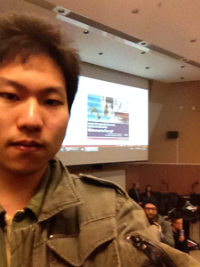

Linda Carter
Fred Xie was born in China. He has lived four years in vancouver, BC. In addition to Skying and Snow Boarding, he loves computers. This is why he joined the Computing Department at BCIT where he hopes to graduate with a Diploma in 2015. The area in Computing that Fred is most passionate about is Mobile Apps. Needless to say, Fred's favorite teacher is Medhat Elmasry
Fred can be reached at linda@coldmail.ca